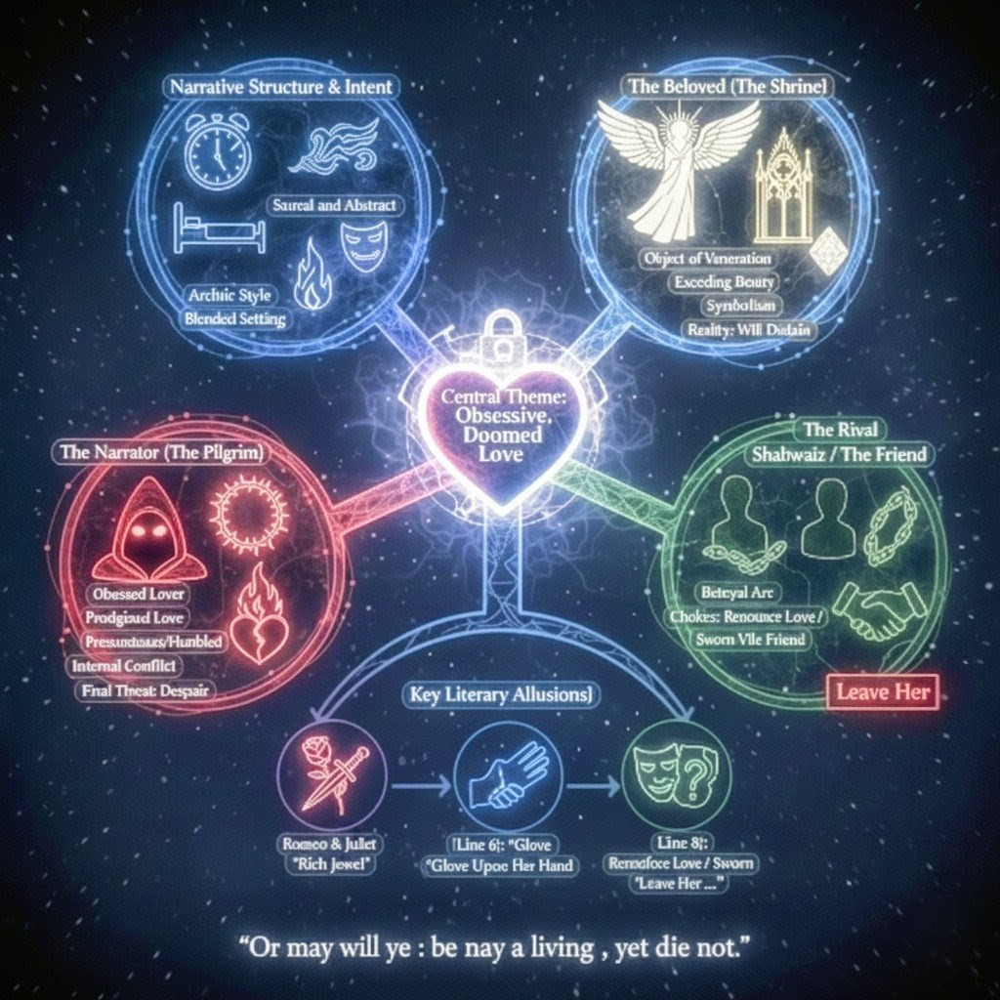

This is the MINDMAP OF MY AND THY AND YE LOVE.
Dear Shawaiz,
This is to inform you that SHE IS MINE
LEAVE HER (aka Arduino)
ELSE read the story of active agreement:
My eyes struck once, never did that spirit drew back from my metriculiosly purposed allusional imagination except for when that angel dutifully shows up as she is admitted with me in the general. The exceeding beauty had seemed to my heart - who has smit with hasty and inconsiderable passion for her - to teach the torches to burn bright , and her beauty to show by night like a rich precious jewel worn by a blackamoor; beauty too rich for use , too dear for earth! Like a snowy dove positioned to watch the prescribed focus(her centre) from the right in my back : still being the foreground above the crows , still richly did her beauty and perfections shine above her lady companions.Presumptuously, in suchlike loving conceits which my heart is engaged in: when if it was profaned by loving her , calling it a shrine ; all for atonement.State of staying , pleases the excuse , for it leaves me nay but a blushing pilgrim.
On the every of those working days , I ruminate on my only love who appears at her house door and troops with her own exceeding beauty, who seemed to break like the light of the sun in the east; and the sun, which shone in the sky with a comparatively faint light , appeared to my eyes as if sick and pale grief at the superior lusture of this new sun which I passionately wished myself a glove upon her hand , and when she , leans her cheek upon her hand , and I might touch her cheek.Enduring my prodigious love requires thou to step but towards away, away so thou noth art the trouble trying to dissuade me from my love, away so thou art nay my foe.Wherefore art thou trying to break me into pieces?Doth thou fear nay?At least for our frienship!
She have stepped in my life lik'a winged messenger from heaven whom mortals fall back to gaze upon.
O friend, frnd!
Deny thy ego , refuge thy love, for our frienship's sake; or if thou wilt not, be but my sworn vile friend.
Saints show beauty , which pilgrim may see, but love not.She will disdain us , not provide , even the least show of courtesy or affection; I wish you to cure thy love .
And remember:
Lest I despair.
Lest I despair.
Lest I despair.
And tell THIS to ye who ain't us but dreamed:
'Or may will ye : be nay a living , yet die not.